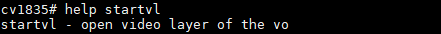

2. 开机画面使用指南¶
此指南用以说明如何在uboot及alios下，显示出开机画面。
3. uboot¶
uboot提供以下功能：
提供boot环境下VO设备的开关，包含VO不同接口和时序。
提供boot环境下VL视频层的开关。
提供boot环境下VO设备背景色的设置。
VL视频层默认格式为YUV420 PLANAR。
3.1. uboot命令¶
- startvo：启动VO设备
参数：设备号，接口型别，时序。

<dev> 设备号，请参考 图表1-1
<intf-type> 接口型别，请参考 图表1-1
<timing> 时序
<> MIPI_TX、LVDS、I80不参考时序变量，会根据目前对应driver来设置时序
CV184X上的标准时序如下：
2(1080P24), 3(1080P25), 4(1080P30), 5(720P50) , 6(720P60) , 7(1080P50) , 8(1080P60), 9(576P50), 10(480P60), 11(800x600)
- stopvo：关闭VO设备
参数：设备号

<dev> 设备号，请参考 图表1-1
- startvl：启动VL视频层
参数：视频层号，图文件地址，视频地址，图文件大小，VO对齐

<layer> 视频层号，请参考 图表1-1
<addr_in> 图文件地址
<addr_out> 视频地址
<size> 图档大小
<alignment> VO对齐
- stopvl：关闭VL视频层
参数：视频层号

<layer> 视频层号，请参考 图表1-1
- setvobg：设定VO设备背景色
参数：设备号，背景色
<dev> 设备号，请参考 图表1-1
<bgcolor> 背景色 (10bit RGB排列，bit[29:20]为R，bit[19:10]为G，bit[9:0]为B)
图表 1-1
处理器类型 |
设备 |
视频层 |
图形层 |
接口类别 |
|---|---|---|---|---|
CV184X |
[0] |
[0] |
[0] |
64(BT.1120), 1024(LCD_18BIT), 2048(LCD_24BIT), 4096(LCD_30BIT), 8192(MIPI_TX), 65536(I80) |
图表 1-2
处理器类型 |
视频层最大分辨率 |
图形层最大分辨率 |
|---|---|---|
CV184X |
1920x1080 |
1920x1080 |
3.2. uboot函数相关代码¶
cmd/Makefile
cmd/cvi_vo.c
drivers/video/Makefile
drivers/video/cvitek/ (包含以下子目录)
include/cvitek/cvi_disp.h
include/cvitek/cvi_mipi.h
include/cvitek/cvi_lvds.h
include/cvitek/cvi_i80.h
include/cvitek/cvi_panels/ (包含以下子目录)
3.3. uboot命令范例¶
以下以CV184X处理器操作，配置设备DHD的时序MIPI_TX 720*1080@60输出为例。
<> 各DDR放置图片地址不同，请根据处理器来使用DDR地址。
把JPEG档载入到内存
fatload mmc 1:1 0x84080000 logo.jpg
解码JPEG到内存（cvi_jpeg jpg_buf_addr dest_buf_addr jpg_size）
cvi_jpeg 0x84080000 0x82080000 0x80000
DHD0设备启动
startvo 0 8192 0 (MIPI_TX) startvo 0 1024 0 (单路6bit LVDS) startvo 0 2048 0 (单路8bit LVDS) startvo 0 4096 0 (单路10bit LVDS，暂不支持) startvo 0 65536 0 (I80)
VL视频层启动
startvl 0 0x84080000 0x82080000 0x80000 16
设置VO背景色为黑色
setvobg 0 0x00000000
VL视频层关闭
Stopvl 0
DHD0设备关闭
Stopvo 0
3.4. 使用储存装置并启用开机画面¶
3.4.1. 准备开机图片¶
SDK 提供了 build/tools/common/bootlogo/process_images.py 工具，可将原始图片转换为 SDK 所需的 logo.jpg 格式（MJPEG 裸流）。
安装依赖：
apt install ffmpeg python3-pil
使用示例：
单张图片（uboot 仅支持单张），竖屏 720x1280 旋转 90 度：
python build/tools/common/bootlogo/process_images.py \
-i my_logo.png -o bootlogo/ -r 720 1280 --rotate 90
单张图片，不旋转，使用原图分辨率：
python build/tools/common/bootlogo/process_images.py \
-i my_logo.png -o bootlogo/
参数说明：
-i输入图片路径（支持 jpg/png）-o输出目录（默认当前目录，生成 logo.jpg）-r输出分辨率 WIDTH HEIGHT（不指定则以输入图片为准）--rotate旋转角度：0/90/180/270
生成 logo.jpg 后，继续以下配置步骤。
将开机图档 logo.jpg (I80屏需要BMP格式图文件)拷贝至板卡目录下 bootlogo/logo.jpg。
在build/boards/cv184x/cv184x_wevb/u-boot/cv184x_defconfig配置CONFIG_BOOTLOGO为y。
如需使用reset、power、backligt功能，需在build/boards/default/dts/cv184x/cv184x_base.dtsi中的vo节点添加gpio相关信息如：
reset-gpio = <&porte 2 GPIO_ACTIVE_LOW>; pwm-gpio = <&porte 0 GPIO_ACTIVE_HIGH>; power-ct-gpio = <&porte 1 GPIO_ACTIVE_HIGH>;
编译时使用menuconfig在SDK options中使能Pack BOOTLOGO，该配置会将logo.jpg打包到烧录文件。
使用下列命令编译BSP。
source build/envsetup_soc.sh defconfig cv184x_wevb menuconfig Build_all
3.5. 注意事项¶
配置开机画面，通过BT.1120/656接口显示时，外接处理器的驱动需自行移植实现。
如果开机画面使用的是MIPI_TX、LVDS或I80接口时，若有不支持的mipi_dsi、lvds或者i80 panel，可参考u-boot-2021.10/include/cvitek/cvi_panels内的headers，新增相对应的header。只要按u-boot-2021.10/include/cvitek/cvi_panels/cvi_panels.h参照其他panel修改即可对应不同的mipi_dsi、lvds或i80 panel。
使用储存装置并储存开机画面时，需于 CV184x_asic.dtsi 配置一块内存空间(默认为0x82080000)，并确保u-boot/include/configs/CV184x-asic.h中的 LOGO_RESERVED_ADDR 设置为同样内存空间。
4. alios¶
alios开机画面目前仅支持MIPI_DSI接口，提供同linux一致的mipi_tx_xx接口(可参考Screen_Docking_Guide.pdf的MIPI_DSI章节)。用户通过在solution中调用这些接口实现VO设备的初始化。
4.1. 启用alios开机画面¶
在cvi_alios/components/cvi_mmf_sdk/cvi_middleware/cvi_panel下添加panel的header，可参考Screen_Docking_Guide.pdf或已支持panel实现combo_dev_cfg_s等数据结构。
在cvi_alios/components/cvi_mmf_sdk/cvi_middleware/cvi_panel/dsi_panels.h中实现新panel的panel_desc_s结构体。
在cvi_alios/solutions/normboot/package_yamls/package.yaml.turnkey中添加config选项并开启如：
CONFIG_PANEL_HX8394: 1 //可添加其他屏幕 CONFIG_RTOS_INIT_MEDIA: 1 CONFIG_SUPPORT_VO: 1 CONFIG_ALIOSLOGO: 1
在cvi_alios/solutions/normboot/customization/cv1842hp_gc8613/pipeline/custom_moduleparam.c中修改配置如：
.alios_sys_mode = 0, .alios_vi_mode = 0, .alios_vpss_mode = 0, .alios_venc_mode = 0, .alios_vo_mode = 1,
在cvi_alios/solutions/normboot/customization/cv1842hp_gc8613/pipeline/custom_voparam.c中修改配置如：
.u8Bindmode = false, //可添加其他屏幕 #if (CONFIG_PANEL_HX8394 == 1 || CONFIG_PANEL_ILI9488 == 1 || CONFIG_PANEL_OTA7290B == 1) .u8VoCnt = 1, #else .u8VoCnt = 0, #endif
如需使用reset、power、backligt功能，需在cvi_alios/solutions/normboot/customization/cv1842hp_gc8613/src/custom_platform.c中PLATFORM_PanelInit()接口自行添加gpio相关信息如：
#if (!defined(CONFIG_SUPPORT_VO) || (CONFIG_SUPPORT_VO)) #if CONFIG_PANEL_HX8394 u8 pw_port, pw_pin, bl_port, bl_pin, rst_port, rst_pin; pw_port = 4; pw_pin = 1; bl_port = 4; bl_pin = 0; rst_port = 4; rst_pin = 2; _GPIOSetValue(pw_port, pw_pin, 1); _GPIOSetValue(bl_port, bl_pin, 1); _GPIOSetValue(rst_port, rst_pin, 1); udelay(20 * 1000); _GPIOSetValue(rst_port, rst_pin, 0); udelay(20 * 1000); _GPIOSetValue(rst_port, rst_pin, 1); udelay(20 * 1000);
4.1.1. 准备开机图片¶
SDK 提供了 build/tools/common/bootlogo/process_images.py 工具来生成 logo.jpg。
安装依赖：
apt install ffmpeg python3-pil
使用示例：
单张图片：
python build/tools/common/bootlogo/process_images.py \
-i my_logo.png -o bootlogo/ -r 720 1280 --rotate 90
多张图片（alios 支持动画 logo，轮流播放多张 JPEG）：
python build/tools/common/bootlogo/process_images.py \
-i ./frames/ -o bootlogo/ -r 720 1280 --rotate 90 -f 15
参数说明：
-i输入图片或文件夹路径-o输出目录-r输出分辨率 WIDTH HEIGHT--rotate旋转角度：0/90/180/270-f帧率（fps），仅多张图片模式有效，默认 10
重要：必须设置 ``CONFIG_RTOS_LOGO_SIZE``，该值需大于实际 logo.jpg 文件的大小，且该内存不会被释放。
生成 logo.jpg 后，继续以下配置步骤。
将开机图档 logo.jpg 拷贝至板卡目录下 bootlogo/logo.jpg，编译SDK，编译时使用menuconfig在SDK options中使能Pack BOOTLOGO，指令如下：
source build/envsetup_soc.sh defconfig cv184x_wevb menuconfig Build_all
4.2. alios开机画面原理¶
将开机图档 logo.jpg 拷贝至$BOOTLOGO_PATH，编译SDK。
在cvi_alios/components/cvi_platform/media/src/media_logo.c代码中，构建VDEC_STREAM_S结构体，并指定pu8Buf等于宏CVIMMAP_RTOS_LOGO_ADDR，该地址保存着logo.jpg数据。
调用CVI_VB_Init()初始化VB。
初始化VDEC设备(可参考MediaProcessingSoftwareDevelopmentReference_zh.pdf第八章)。
调用CVI_VDEC_SendStream()将jpeg数据送VDEC解码。
调用CVI_VDEC_GetFrame()获取解码完成的VIDEO_FRAME_INFO_S结构体。
调用CVI_VO_SendLogoFromIon()送显，该接口目前仅支持NV21格式。